Welcome to Munchester United F.C!
«Манче́стер Юна́йтед» (полное название — Футбольный клуб «Манчестер Юнайтед», англ. Manchester United Football Club; английское произношение: [ˈmæntʃɪstər ju:ˈnaɪtɪd 'futbɔ:l klʌb]) — английский профессиональный футбольный клуб из Траффорда, Большой Манчестер. Был основан в 1878 году под названием «Ньютон Хит (Ланкашир энд Йоркшир Рейлуэй)», в 1902 году изменил название на «Манчестер Юнайтед». Один из самых популярных футбольных клубов в мире. Один из основателей английской Премьер-лиги в 1992 году
Википедия
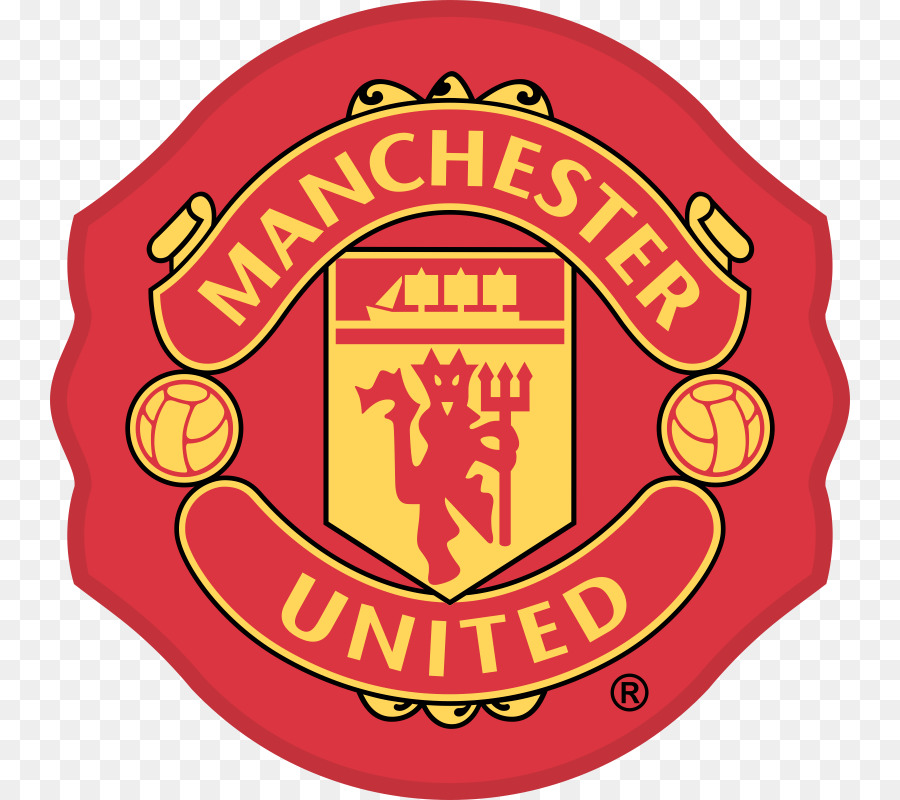
Oсновной состав Манчетер Юнайтед в 20/21 сезоне
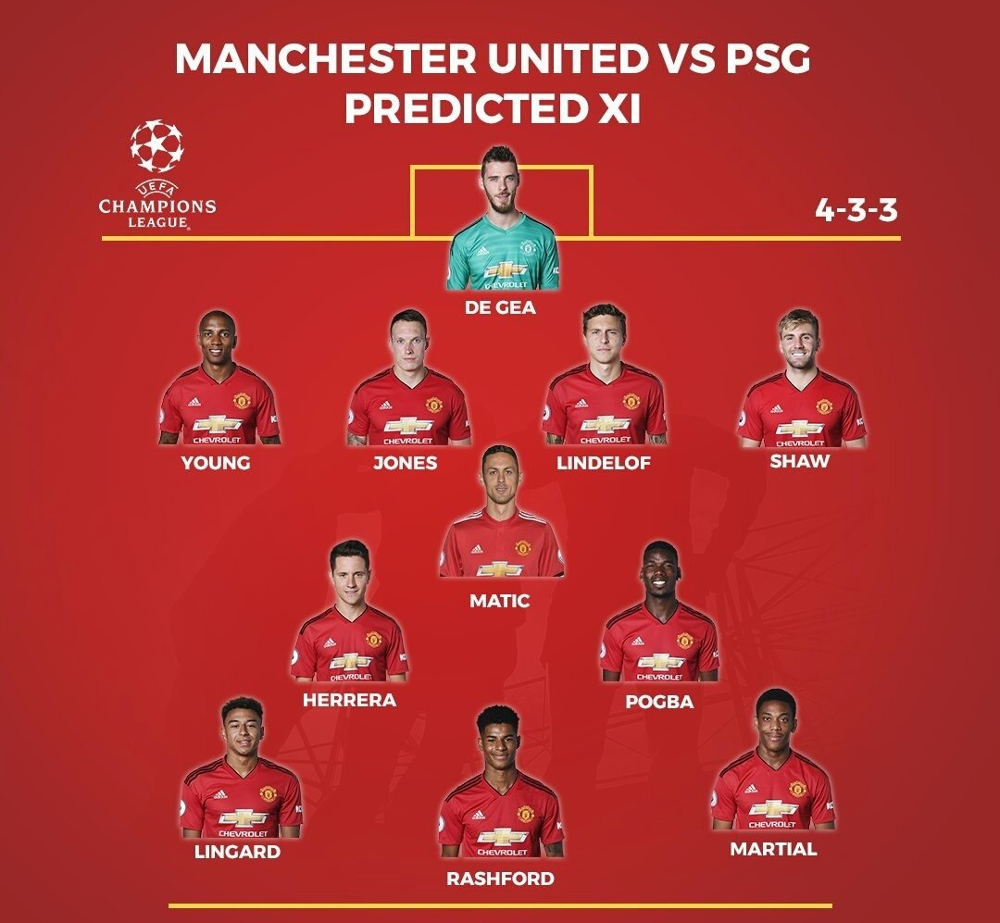
Три самых дорогих трансферов Munchester United F.C.
№1 Рой Кин («Ноттингем Форест». 19.07.1993. 3,75 миллиона фунтов)Сэр Алекс Фергюсон заполучил игрока, который в последствии стал одним из лучших капитанов в истории «Юнайтед»
№2 Энди Коул («Ньюкасл Юнайтед». 12.05.1995. 6 миллионов фунтов + Кит Гиллеспи)Болельщики «Юнайтед» были заинтригованы неожиданным переходом нападающего из дружественного клуба АПЛ «Ньюкасла» посреди сезона
№3 Яп Стам («ПСВ Эйндховен». 01.07.1998. 10,75 миллионов фунтов)Сэр Алекс какое-то время наблюдал за стойким защитником, прежде чем получил его летом 1998 года, когда решил перестроить команду после сезона 1997/98, завершившегося без трофеев. Сообщают, что Стам так хотел попасть в «Юнайтед», что ради успешного совершения сделки отказался от личного вознаграждения за переход.
Тренеры в истории Munchester United F.C.
Википедия тренеров Munchester United F.C.
Зал трофеев Munchester United F.C.
Чемпион Англии (20 кубков)1908
1911
1952
1956
1957
1965
1967
1993
1994
1996
1997
1999
2000
2001
2003
2007
2008
2009
2011
2013
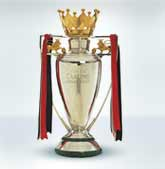
Кубок Англии (12 кубков)
1909
1948
1963
1977
1983
1985
1990
1994
1996
1999
2004
2016
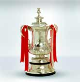
Кубок Лиги (5 кубков)
1992
2009
2006
2010
2017

Суперкубок Англии (21 кубок)1908
1911
1952
1956
1957
1965
1967
1977
1983
1990
1993
1994
1996
1997
2003
2007
2008
2010
2011
2013
2016
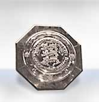
Лига Чемпионов (3 кубка)1968
1999
2008
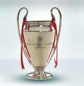
Лига Европы (1 кубок)2017
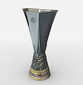
Кубок Кубков (1 кубок)1991
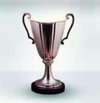
Суперкубок УЕФА (1 кубок)1991
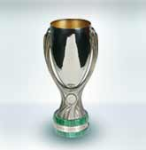
Межконтинентальный кубок (1 кубок)1999
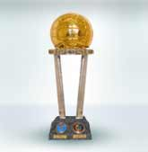
Клубный Чемпионат Мира (1 кубок)2008
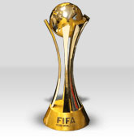